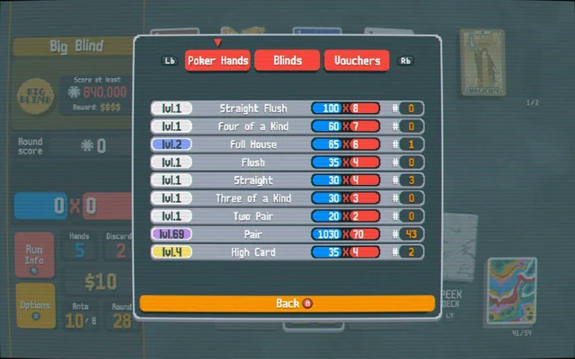
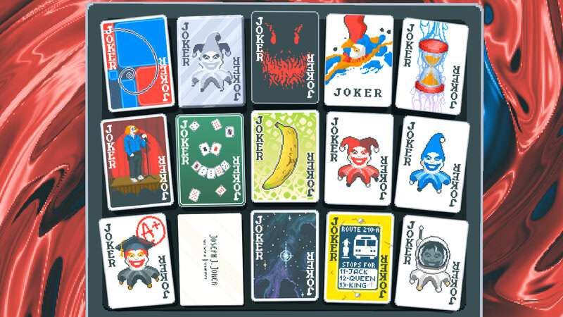
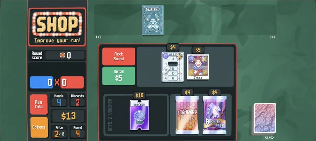

¿Qué es Balatro?
Balatro es un juego de cartas roguelike que combina elementos de póker con mecánicas de construcción de mazos. Desarrollado por LocalThunk y publicado por Playstack, el juego desafía a los jugadores a crear combinaciones estratégicas para maximizar puntuaciones y superar rondas.

Mecánicas Básicas
- Mano de Póker: Los jugadores forman manos basadas en combinaciones de póker (parejas, tríos, escaleras, etc.) para ganar puntos.
- Jokers: Cartas especiales que otorgan bonificaciones únicas, como multiplicadores de puntuación o efectos adicionales.
- Cartas Mejoradas: Cartas con modificadores (oro, acero, bonus) que aumentan su valor o añaden efectos.
- Tienda y Mejoras: Entre rondas, los jugadores pueden comprar cartas, jokers o mejoras para optimizar su mazo.


Estrategia y Progresión
El objetivo es superar "blinds" (desafíos) con puntuaciones crecientes. Los jugadores deben equilibrar riesgo y recompensa, eligiendo cuándo jugar manos seguras o experimentar con combinaciones arriesgadas. La rejugabilidad es alta debido a la aleatoriedad y la variedad de jokers.

Por Qué Jugar Balatro
Balatro destaca por su adictiva jugabilidad, arte vibrante y banda sonora envolvente. Es ideal para quienes disfrutan de juegos estratégicos con un toque de creatividad y sorpresa.